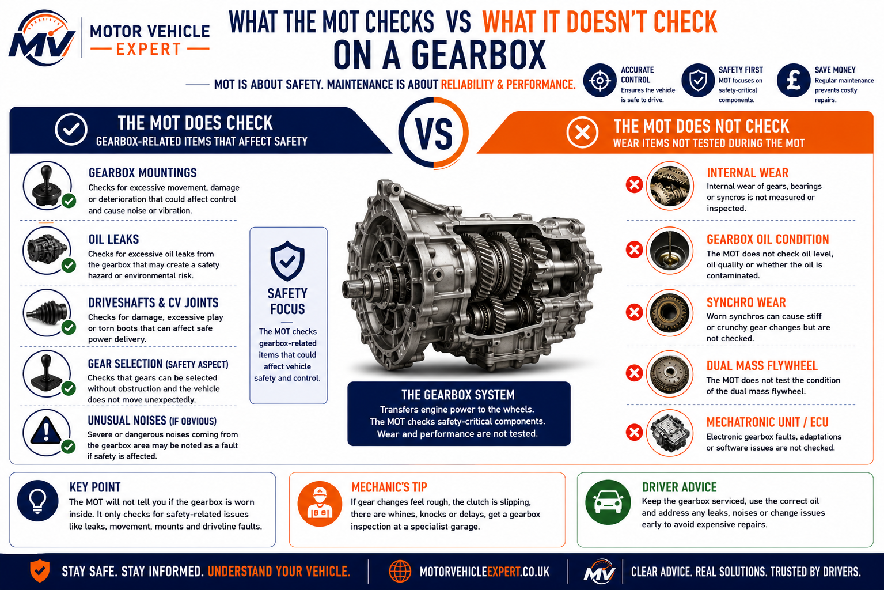
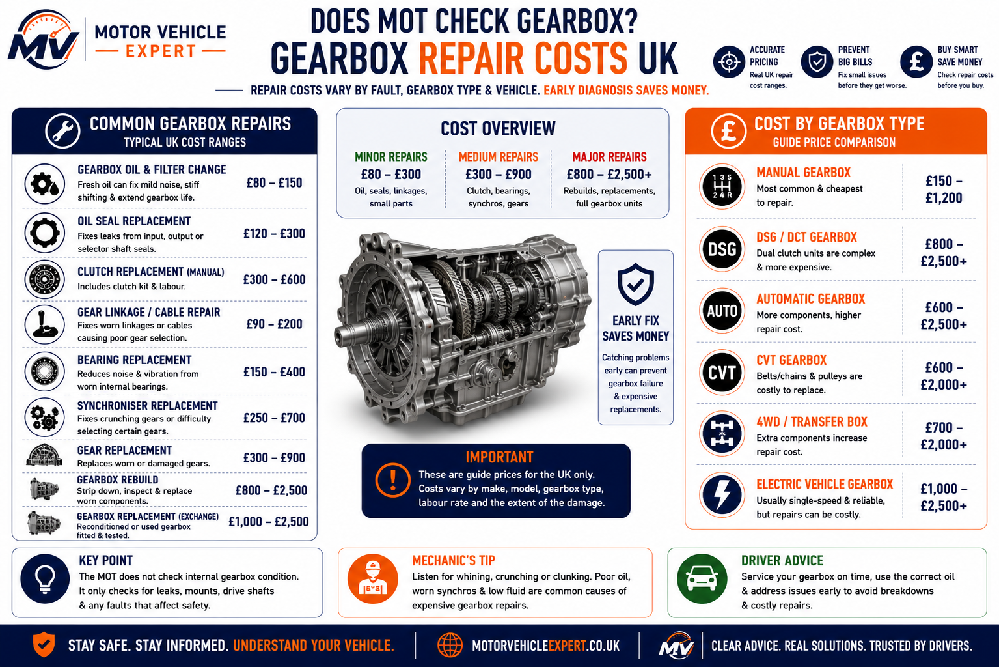

Internal Gearbox Wear
Not CheckedThe MOT does not dismantle the gearbox or assess internal gears, bearings, synchros, clutches or future reliability.
No. An MOT does not check the gearbox in the same way a garage diagnoses internal transmission wear, synchro damage, clutch drag, automatic gearbox condition or future gearbox reliability.
However, gearbox-related faults can still matter if they affect safe control, prevent the tester from moving the vehicle, cause serious oil leaks, create excessive drivetrain movement or make the vehicle unsafe to operate.
A valid MOT does not prove the gearbox is healthy. Internal gearbox wear, automatic transmission condition and future reliability are not tested, but serious control issues, leaks or insecure mountings can still affect roadworthiness.
This guide is written for UK drivers who want a clear answer before an MOT test. It explains what the MOT does and does not check around gearbox condition, when gear selection problems become safety concerns, and why a valid MOT should not be treated as proof that the gearbox is healthy.
The MOT does not dismantle the gearbox or assess internal gears, bearings, synchros, clutches or future reliability.
The vehicle must be capable of being moved and controlled safely during the inspection.
Serious transmission fluid leaks may affect the MOT if they create safety, environmental or roadworthiness concerns.
A gearbox that jumps out of gear or loses drive should be inspected before the MOT and before further driving.
Costs range from linkage or mount repairs to clutch replacement, gearbox replacement or automatic transmission repair.
Many gearbox symptoms are caused by clutch faults, linkage problems, mounts, sensors or fluid leaks rather than internal failure.
An MOT does not check the gearbox as a full transmission health test. Internal wear, synchro condition, automatic gearbox oil quality and future reliability are not assessed. However, serious faults that affect safe control, vehicle movement, leaks or drivetrain security can become relevant during the inspection.
These symptoms do not automatically mean MOT failure, but they help separate normal gearbox wear from faults that may affect safe control, testability or repair cost.
May be caused by clutch drag, linkage wear, low gearbox oil, mounts or internal gearbox wear.
Can indicate low oil, bearing wear, synchro wear or drivetrain noise that needs investigation.
Can affect safe control and should be repaired before the MOT or further driving.
Fluid loss can damage bearings, gears, seals and automatic transmission components.
Jerking, delayed engagement or limp mode can point to fluid, sensor, software or internal faults.
Worn engine or gearbox mounts can cause knocking, poor gear selection and drivetrain movement.
Gearbox symptoms often overlap with clutch faults, linkage problems, worn mounts and low fluid. Use this dashboard as a quick warning-sign check, then confirm the fault properly before pricing major gearbox repairs.
No. An MOT does not inspect the gearbox in the same way as a full transmission diagnosis. Testers do not dismantle the gearbox, inspect internal wear, assess synchro condition, test automatic gearbox oil quality or predict future gearbox failure.
A vehicle can pass an MOT with a noisy gearbox, worn gearbox, slightly notchy gear change or developing transmission fault if it remains safe, controllable and roadworthy during the test.
The gearbox becomes relevant when the fault affects safety. Difficulty moving the vehicle, loss of drive, jumping out of gear, severe transmission leaks or insecure drivetrain mountings should all be investigated before the MOT.
The MOT is not a gearbox health check. It is focused on roadworthiness and safe control, not long-term gearbox condition or repair cost risk.
Many gearbox symptoms are caused by related faults such as clutch drag, worn mounts, linkage adjustment, low oil, sensors or software issues. Diagnosis should always come before assuming the gearbox needs replacement.
The MOT does not inspect the inside of the gearbox or assess transmission wear. Instead, it focuses on whether gearbox-related faults affect the vehicle's safety, roadworthiness and ability to be driven during the inspection.
The tester must be able to move and control the vehicle safely. Serious transmission faults that prevent normal movement can affect the MOT.
Heavy gearbox oil leaks may become MOT advisories or failures if they create a safety or environmental concern.
Broken or insecure mountings can allow excessive drivetrain movement and may affect roadworthiness.
Engine Mount MOT Guide →Warning lights are not a gearbox inspection, but transmission faults should always be diagnosed before an MOT if the vehicle enters limp mode or shifts unpredictably.
Diagnostics Hub →A vehicle that cannot move safely or reliably may not be suitable for MOT testing until repaired.
The MOT considers whether gearbox-related faults compromise safe vehicle operation rather than the internal condition of the transmission itself.

The infographic highlights one of the biggest MOT misconceptions. The inspection is not a gearbox health check. Testers do not dismantle the transmission, inspect internal gears or assess future reliability. Instead, they look for gearbox-related problems that affect safe vehicle control, visible transmission leaks, insecure mountings and overall roadworthiness.
The gearbox only becomes an MOT concern when it affects the safe operation of the vehicle.
Oil changes, internal wear, bearings, synchros and automatic transmission servicing remain maintenance items rather than MOT inspection points.
Difficulty selecting gears, grinding, slipping, jumping out of gear or transmission warning lights should be diagnosed early before they develop into expensive gearbox repairs.
Many gearbox problems are expensive to repair, but they are not part of the standard MOT inspection. The MOT focuses on roadworthiness, not the internal condition or long-term reliability of the transmission.
A passed MOT does not confirm that your gearbox is in good condition. Internal wear, transmission servicing, automatic gearbox health and future reliability are maintenance and diagnostic concerns rather than MOT inspection items.
Gears, bearings, synchros and shafts are not dismantled or inspected.
Fluid quality, service intervals and oil condition are maintenance items.
The MOT cannot predict whether the gearbox will fail next week or next year.
Transmission software faults, shift quality and internal control issues are not assessed.
| Gearbox or Transmission Item | Checked During MOT? | Why It Isn't Included |
|---|---|---|
| Internal gearbox wear | No | The gearbox is not dismantled or inspected internally. |
| Synchro wear | No | Crunching or notchy gear changes indicate wear but are not measured during an MOT. |
| Automatic transmission fluid condition | No | ATF quality, contamination and service history are maintenance checks. |
| Future gearbox reliability | No | A passed MOT cannot predict future gearbox or transmission failure. |
| Gearbox bearing wear | No | Internal bearings are not examined unless a fault affects safe operation. |
| Clutch drag or slip | No | The MOT is not a clutch or transmission diagnostic inspection. |
| Dual-clutch (DCT) condition | No | Shift quality, clutch pack wear and calibration are outside MOT scope. |
| CVT transmission condition | No | Internal belt, pulley and hydraulic wear are specialist diagnostic items. |
| Gearbox service history | No | The tester does not check whether the transmission has ever been serviced. |
Many drivers assume that a car with a fresh MOT must have a healthy gearbox. In reality, some of the most expensive transmission problems—such as worn bearings, failing synchros, slipping automatic gearboxes and overdue fluid changes—can exist without affecting the MOT. Always combine the MOT history with a road test, service records and a professional inspection before buying a used vehicle.
These symptoms do not automatically mean MOT failure, but they should be investigated before the problem becomes unsafe, more expensive or affects the vehicle's ability to move and be controlled safely.
If the car jumps out of gear, loses drive, selects gears unpredictably, enters limp mode or leaks transmission fluid heavily, arrange diagnosis before the MOT and before further driving.
Hard gear selection may be caused by clutch drag, linkage wear, low gearbox oil, mount movement or internal transmission faults.
Crunching can point to synchro wear, clutch drag, low fluid, poor adjustment or driver technique issues.
Whining may indicate bearing wear, low oil, internal gearbox wear or drivetrain noise.
Whining Noise Guide →A gearbox that jumps out of gear can affect safe control and should be inspected before the vehicle is tested or driven further.
Jerky shifts may indicate transmission fluid problems, software faults, sensors, mounts or internal automatic gearbox wear.
Jerking When Changing Gear →Transmission fluid loss can quickly damage bearings, gears, seals or automatic gearbox components.
Gearbox symptoms are often misdiagnosed. A fault that feels like internal gearbox failure may actually be caused by clutch drag, worn engine mounts, gearbox mounts, linkage adjustment, low fluid or a sensor issue. Always diagnose the cause before pricing a gearbox replacement.
Most gearbox faults do not automatically fail an MOT because the inspection is not a full transmission diagnosis. However, faults that affect vehicle control, safe operation or roadworthiness can become relevant during the test.
A noisy or worn gearbox can still pass an MOT if the vehicle remains safe to drive. The greatest concern is whether the gearbox fault affects safe control, vehicle movement, drivetrain security or creates a significant transmission fluid leak.
Minor gear noise or slightly notchy gear changes rarely affect the MOT on their own.
Whining, occasional crunching or difficult gear selection should be diagnosed before the problem worsens.
Jumping out of gear, loss of drive or severe gear selection problems can affect safe vehicle control.
Heavy gearbox oil leaks and insecure mountings should always be repaired before the MOT.
Use this comparison to separate normal transmission wear from faults that may affect roadworthiness, safe vehicle control or the MOT inspection.
| Gearbox Issue | Checked By MOT? | May Affect MOT? | Best Action |
|---|---|---|---|
| Normal gearbox wear | No | Usually no | Monitor symptoms |
| Notchy gear change | No | Usually no | Inspect during servicing |
| Gearbox whine | No direct test | Sometimes | Check gearbox oil and diagnose |
| Difficulty selecting gears | May be noticed | Yes | Inspect clutch, linkage and gearbox |
| Jumping out of gear | May affect control | Yes | Repair before MOT |
| Loss of drive | Vehicle must move | Yes | Do not continue driving |
| Gearbox oil leak | Visible leak | Yes | Repair leak before test |
| Broken gearbox mount | Visible component | Yes | Replace mount |
| Transmission warning light | No direct test | Possible | Scan and diagnose |
One of the biggest gearbox myths is that a fresh MOT proves the transmission is healthy. It doesn't. Internal wear, worn bearings, failing synchros, clutch wear and automatic gearbox problems can all exist while a vehicle still passes its MOT. Always judge a gearbox using road testing, service history, diagnostic scans and a professional inspection—not the MOT certificate alone.
A gearbox or transmission fluid leak can become relevant during an MOT if it creates a safety, environmental or roadworthiness concern. Light misting may be recorded as an advisory, but active dripping should always be investigated before the test.
Low gearbox oil can damage bearings, gears, seals and automatic transmission components. A leak that starts small can become an expensive gearbox repair if the vehicle is driven while fluid is low.
Light oil staining around the gearbox casing, driveshaft seal or sump area may be less serious if there is no active dripping.
Active dripping can create environmental concerns and may indicate fluid loss that could damage the gearbox.
Leaks near the gearbox area may be engine oil, gearbox oil, clutch hydraulic fluid, power steering fluid or driveshaft seal leakage.
A proper inspection should identify the source before replacing parts. What looks like a gearbox leak may actually come from the engine, clutch hydraulics, driveshaft seals or another nearby system.
Never guess the source of a leak around the gearbox. Clean the area, inspect after a short drive and confirm the fluid type before authorising repairs. Correct diagnosis can prevent replacing a gearbox seal when the real fault is engine oil, clutch fluid or a driveshaft seal.
Most gearbox faults do not appear overnight. Recognising the warning signs early can help you avoid expensive transmission repairs and reduce the chance of drivability problems affecting your MOT.
Select every gear while stationary and during a short drive. Difficulty engaging gears may indicate clutch, linkage or gearbox faults.
Watch for delayed engagement, harsh shifting, warning messages or limp mode before booking the MOT.
Inspect underneath the vehicle for fresh gearbox oil or transmission fluid before driving to the test centre.
Many gearbox symptoms are caused by components outside the gearbox itself. Correct diagnosis can save hundreds or even thousands of pounds by identifying simpler faults first.
One of the most common and expensive mistakes is replacing a gearbox before confirming the fault. Worn engine mounts, clutch drag, selector linkage problems, low transmission fluid or electronic faults can all produce symptoms that feel like gearbox failure. Always diagnose first and repair second.
Gearbox repair costs vary widely depending on whether the fault is caused by linkage, mounts, clutch problems, fluid leaks, sensors, software or internal gearbox failure. Always diagnose the cause before pricing a gearbox replacement.
Not every gearbox symptom means the gearbox itself has failed. Clutch drag, worn mounts, linkage faults, low fluid or electronic transmission faults can all feel like gearbox failure but may cost much less to repair.
Some gear selection problems are caused by selector linkage, cables or worn mountings rather than internal gearbox damage.
Gearbox oil leaks, clutch hydraulics or clutch replacement can be costly but may prevent more serious transmission damage.
Manual gearbox replacement and automatic transmission repairs can become some of the most expensive vehicle repairs.

The repair-cost diagram separates lower-cost external faults from more expensive internal gearbox repairs. Linkage problems, mounts and minor leaks may be repairable without replacing the gearbox, while automatic transmission failure or major internal damage can become very expensive.
The key message is to diagnose first. Many vehicles are wrongly assumed to need a gearbox when the real fault is clutch drag, selector linkage, worn mounts, low fluid or an electronic control issue.
| Repair | Typical UK Cost | Priority | Why It Matters |
|---|---|---|---|
| Gearbox diagnosis | £60–£150 | Best first step | Confirms whether the fault is gearbox, clutch, linkage, mount or electronic related. |
| Gear linkage repair | £80–£350+ | Lower cost | Can restore gear selection without replacing the gearbox. |
| Gearbox mount replacement | £100–£350+ | Medium | Reduces drivetrain movement, knocking and gear selection issues. |
| Gearbox oil leak repair | £120–£600+ | Repair soon | Prevents low gearbox oil and internal bearing or gear damage. |
| Clutch replacement | £400–£1,200+ | Diagnose first | Clutch drag or slip can feel like gearbox failure. |
| Manual gearbox replacement | £700–£2,500+ | High cost | May be needed for severe internal wear, bearing failure or major damage. |
| Automatic gearbox repair | £1,000–£5,000+ | Highest risk | Automatic transmission faults can involve specialist diagnosis, rebuilds or replacement units. |
Do not keep driving with loss of drive, severe slipping, heavy gearbox leaks, jumping out of gear or serious transmission warnings. Continuing to drive can turn a smaller repair into a major gearbox or automatic transmission bill.
The cheapest gearbox repair is usually the one diagnosed early. A worn mount, leaking seal or linkage fault can be manageable. Ignoring fluid loss, harsh shifting, jumping out of gear or transmission warnings can lead to internal gearbox damage that costs far more to repair.
A valid MOT confirms a vehicle met the minimum legal roadworthiness standards on the day of the test. It does not confirm the gearbox is healthy or guarantee expensive transmission repairs are not just around the corner.
Gearboxes are among the most expensive components to repair or replace. Internal wear, worn synchronisers, automatic transmission faults and developing bearing problems can all exist while a vehicle still passes its MOT. For that reason, gearbox condition should always form part of your used car inspection.
Never assume a seller's claim of "It has a full MOT" means the transmission is fault-free. The MOT checks roadworthiness—not gearbox reliability, service history or future mechanical condition.
Drive the vehicle long enough to select every forward gear and reverse. Listen for whining, crunching, vibration, slipping or gears jumping out under load.
Look for evidence of gearbox servicing, clutch replacement, transmission fluid changes and previous gearbox repairs where applicable.
Check underneath for gearbox oil leaks, damaged driveshaft seals, worn mountings and excessive drivetrain movement before agreeing to buy.
Professional mechanics never judge a gearbox by the MOT certificate alone. The safest buying decision combines a road test, service history, MOT history, a visual inspection and, where possible, a professional diagnostic scan. Spending a little time checking these areas can prevent repair bills running into thousands of pounds.
Find clear answers to the most common UK questions about gearbox condition, transmission faults, gear selection, oil leaks and how gearbox problems relate to the MOT test.
No. An MOT is not a gearbox inspection. Testers do not dismantle the transmission, inspect internal gears, bearings or synchros, or assess gearbox wear. The inspection focuses on whether the vehicle remains safe and roadworthy.
Yes, in some situations. If a gearbox-related fault affects safe vehicle control, prevents the vehicle from being driven during the test, causes a serious transmission fluid leak or creates another roadworthiness concern, it may affect the MOT outcome.
Not as a full gearbox diagnosis. However, the tester must be able to move and control the vehicle safely. Serious gear selection problems should therefore be repaired before the MOT.
Potentially. Light gearbox oil misting may only require monitoring, but significant leaks that create safety or environmental concerns can become MOT advisories or failures depending on their severity.
Not automatically. However, a transmission warning light can indicate limp mode, electronic faults or serious drivability problems that should always be diagnosed before the MOT.
Yes. Gearbox noise alone does not automatically fail an MOT if the vehicle remains safe and controllable. Even so, whining, grinding or knocking noises should be investigated because they often indicate developing transmission wear.
No. Automatic transmission fluid level, condition and service history are maintenance items. The MOT does not inspect transmission fluid quality or determine whether it should be replaced.
Yes. If the gearbox affects safe driving, gear selection, vehicle movement or is leaking transmission fluid, repair it before the MOT. Fixing problems early also helps prevent more expensive gearbox damage later.
The MOT is designed to assess roadworthiness, not long-term gearbox health. A vehicle can pass with internal gearbox wear, while a seemingly minor transmission problem that affects safe control or causes a significant fluid leak may still require attention before the test. For the best buying or ownership decision, combine the MOT history with service records, a road test and a professional gearbox inspection where necessary.